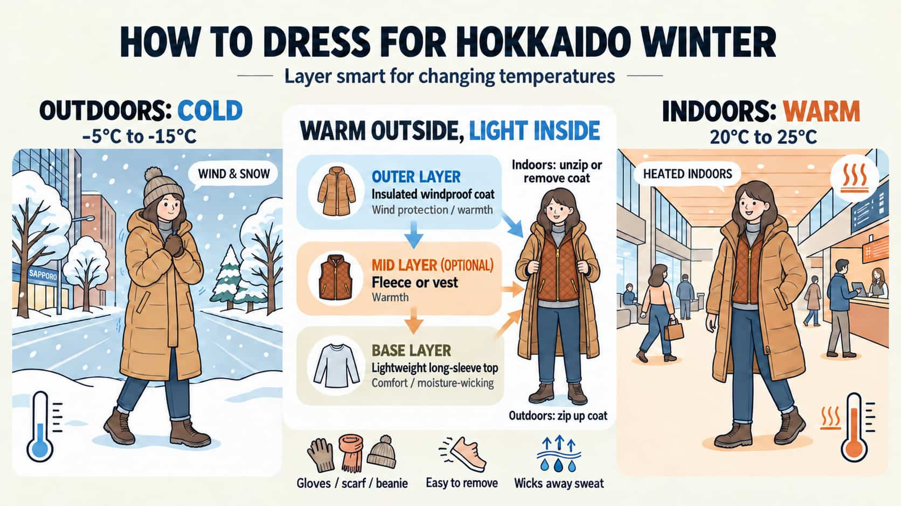

The 30-second version
What to know before you go
Your first Hokkaido ski day does not need to feel complicated. Prepare for the temperature, dress in removable layers and leave enough time for rentals and a relaxed lesson.
Outdoor temperatures are often around -5°C to -15°C, while indoor spaces are well heated.
Choose a moisture-wicking base, an optional warm mid-layer and a waterproof outer layer.
Stay in Sapporo or Otaru, choose a gentle beginner area and arrive early for equipment rental.
Your first taste of winter
You leave a warm or tropical climate and land in a world covered in white. For many travellers from across Asia and beyond, stepping into Hokkaido winter is the first time snow feels real.
🌡️ What does the cold feel like?
Winter temperatures in Hokkaido often sit between -5°C and -15°C. If 20°C air-con already feels chilly, those numbers may be hard to picture.
Think of the rush of cold air when you open a freezer, then add wind and snow under your feet. It sounds intense, but the air is often crisp rather than miserable.
With the right layers, the cold is manageable and can feel wonderfully refreshing. Comfort comes down to preparation, not toughness.
❄️ Warm indoors,
freezing outdoors
Airports, convenience stores, hotels and restaurants are usually heated to around 20–25°C. Wear removable layers: a windproof outer jacket over lighter, moisture-wicking clothes. Unzip indoors, zip up outside, and you will handle the temperature changes comfortably.
❄️ Hokkaido snow is
softer than it looks
Snow is not the same as the hard ice in a freezer.
Much of Hokkaido is known for powder snow. It is light, dry and soft, with a texture closer to flour or icing sugar. Your boots sink in with a satisfying crunch, and falls on fresh snow are often gentler than expected.
The slippery part is compacted ice around hotel entrances, car parks and pavements. If the ground looks shiny, slow down and take shorter steps.
🌨️ Leave room for weather changes
Heavy snow can reduce visibility and affect roads, trains and ski lifts. Keep these points in mind:
- Buses and trains may be delayed or cancelled, so avoid packing your itinerary too tightly.
- Resorts may pause selected lifts or close runs. Check the resort update before setting off; MOPO will also contact students when lesson plans are affected.
- Walk slowly when visibility is poor. Rushing across icy ground is rarely worth it.
- If the snowfall is especially heavy, switch plans without guilt. A good meal, an onsen and a slow day in town are still a very Hokkaido experience.
🐧 Walk like a penguin
The easiest place to slip is often not the ski slope. It is the short icy stretch outside a hotel, car park or convenience store.
Take small steps, bend your knees slightly and keep your weight over your feet. Place the whole foot down instead of striking with your heel. It may look like a penguin walk, but it works.

Dress for skiing, not just for winter
WHAT TO WEAR ON THE SLOPES
These tips are for active time on the slopes. Skiing warms you up quickly, so piling on thick clothes can leave you sweaty and uncomfortable. A moisture-wicking base, a warm mid-layer and a waterproof outer layer work far better.
⚠️ A quick note on getting too cold
Wet clothes make your body lose warmth faster. That is the main idea to remember. Wear the right layers, stay dry, and head indoors or change damp clothing when you start feeling cold. For most beginners, a little awareness goes a long way.
🚫 What to avoid
- Cotton tops and everyday heat-retaining layers: once soaked with sweat, they dry slowly and feel cold against your skin.
- Short socks or several pairs of regular socks: short socks expose your shins to boot friction, while multiple pairs make ski boots too tight. One proper pair of ski socks is enough.
- Jeans: snow makes denim wet, heavy and stiff, which restricts movement.
- Regular trainers: roadside snow can be deeper than the sole, and smooth trainers have very little grip on ice.
- Sunglasses in snowy weather: they leave your eyes exposed to wind and offer little impact protection. Use ski goggles instead.
✅ Worth packing yourself
- Ski socks: ski boots are rigid. Proper socks add cushioning around the shin and ankle without creating bulky folds.
- A moisture-wicking base layer and fleece mid-layer: the base moves sweat away, the middle keeps you warm, and the ski jacket blocks wind and snow.
- Waterproof gloves with optional liners: use ski-specific outer gloves. Thin, moisture-wicking liners are useful when you remove the outer pair to adjust gear or check your phone.
- Ski goggles: snow reflects strong UV light, and goggles shield your eyes from wind, snowfall and minor impacts. They are safety equipment, not just an accessory.
- A neck warmer or face covering: useful for warmth, wind protection and sun protection on bright days.
🎿 Rent first, buy later
Resorts and rental shops carry ski jackets, trousers, boots, skis or snowboards, and helmets. Some also rent gloves and goggles. That is more than enough for a first trip, so there is no need to buy a full setup before you know what you enjoy.
Book online in advance and provide your age, height, weight and shoe size. At the shop, show your booking reference and try on the boots and clothing before collecting the set. Popular resorts can have queues during peak periods, so advance booking helps. A full set generally costs about ¥6,800–¥20,000, depending on the resort and package. Check the latest resort price before your trip; MOPO students may also receive partner rental discounts at selected locations.
Stay in Sapporo or Otaru
You do not need an expensive ski-in resort to enjoy Hokkaido. Base yourself in Sapporo or Otaru, ski during the day, then return for seafood, soup curry, shopping and a proper city evening. It is flexible, convenient and often easier on the budget.
🗺️ Where does Otaru fit in?
Otaru is about 50 minutes from Sapporo and makes an easy rest day between lessons. Walk along the canal, browse the glassware shops and settle in for a seafood meal. You can stay overnight for a slower pace or visit as a straightforward day trip from Sapporo.
🗺️ Beginner-friendly resorts near Sapporo
- Sapporo Kokusai: wide, gentle beginner slopes and consistently good snow. Its moving carpet works like a flat travelator on snow, so you can practise the basics before dealing with a chairlift.
- Sapporo Teine: easy to reach from central Sapporo by train and bus. The resort has a moving-carpet practice area, broad beginner slopes and enough progression for first-timers who improve quickly. You can still be back in the city for dinner and shopping.
- Snow Cruise ONZE: approachable terrain for beginners and first-time snowboarders, with generally wallet-friendly lift options. The slopes face Ishikari Bay, giving you a front-row sea view while you practise. Its location also works well for a half-day or night-ski session.
- Asarigawa Onsen Ski Resort: the terrain is a little more challenging overall, but the beginner area has a moving carpet for learning the basics. It is not fully ski-in/ski-out, although nearby accommodation is very close: the nearest hotel is about one minute away on the regular local bus. The bus normally requires a fare, but guests staying at selected hotels may use it free of charge. Accommodation and resort costs are relatively affordable, making this a good choice for skiing, onsen time and a relaxed stay.
A quick way to choose
For wide beginner slopes and reliable snow.
For convenience and an easy Sapporo day trip.
For value, sea views and night skiing.
For a quieter stay, onsen time and a little more challenge.
Not sure which one suits your group? Tell us where you are staying, your preferred date and everyone’s experience level.
Help me choose a resort🚌 Transport tip
For a first trip, choose a resort with a direct bus or a simple train-and-bus route from Sapporo Station or Odori. A day trip is much easier when you are not hauling luggage.
🗣️ Language is manageable
Major resorts and tourist areas can usually handle basic English for tickets and rentals. MOPO lessons are available in English, Mandarin, Cantonese and Japanese, so you can learn in the language that feels most comfortable.
What a ski day looks like
If you have never visited a ski resort, the timing can feel like a mystery. Here is a comfortable first-day schedule:
Leave Sapporo by resort bus or train
Arrive, collect rentals and get changed
Lesson begins
Lunch and a proper rest
Continue the lesson or practise at your own pace
Finish, return your gear and head back to town
Back in Sapporo for dinner and a well-earned rest
This pace gives first-timers enough snow time without turning the day into a rush.
Your first lesson starts with stopping
Many beginners picture clipping in during the morning and cruising down from the summit by afternoon. Your real first milestone is simpler and far more useful: learning how to stop with confidence.
Control comes before speed
The first two hours are about balance, braking and feeling in control.
- Your instructor starts with the equipment: how ski boots should feel and how to clip into skis or a snowboard safely. Then you learn to move and stop on flat snow.
- Ski beginners practise the wedge, often called the “pizza”. Point the ski tips closer together and push the tails apart to create resistance. Once you can brake, you add gentle turns by shifting your weight.
- Snowboard beginners learn to use the heel edge and toe edge, bringing the board across the slope to control speed and stop.
- You also learn how to fall safely. Stay relaxed, sit towards your hip and avoid reaching out with a stiff arm. Knowing what to do makes the whole experience feel less intimidating.
Once you can stop safely, the fun really begins.
Your legs will know they worked
Skiing uses your thighs and core in ways that everyday life does not. Expect to feel it when you return to the hotel.
A few weeks before the trip, add some squats, lunges and planks to your routine. You do not need athlete-level fitness. A little preparation simply makes day one more comfortable.
The practical details families usually ask about
Once you understand what a first ski day feels like, these details will help you decide what suits your group.
Bringing children?
Share each child’s age, energy level and previous snow or board-sport experience when arranging a lesson.
- Children under 7 learn one-to-one for safety and attention.
- Suggested starting age: 4+ for skiing and 7+ for snowboarding.
- Skiers and snowboarders learn separately because the movements and demonstrations are different.
- Lessons take up to 5 learners; for complete beginners, 4 or fewer gives everyone more practice time.
What does the lesson price cover?
Included with MOPO lessons:
- Private instruction tailored to your group’s pace and goals.
- Tax and liability insurance.
- Photos and videos taken during the lesson.
Plan and pay for separately:
- Lift tickets and equipment or ski-wear rental.
- Transport to the resort and meals during the day.
Before arranging a lesson, prepare your preferred date, group size, ages, experience levels and whether each person wants to ski or snowboard. This makes it much easier to match the group with the right plan.
Learning with MOPO
Support that keeps a first day simple
MOPO offers private ski and snowboard lessons near Sapporo for complete beginners, families and small groups. The pace is adjusted to your experience, fitness and confidence.
Start with balance and stopping, with time to repeat each movement.
Lessons are available in English, Mandarin, Cantonese and Japanese.
Get clear information about the resort, rentals and meeting point before your lesson.
Ready for your first day on snow?
Your first lesson is about getting comfortable with snow, learning safely and enjoying every small win.
By the time you fly home, you may already be planning the next trip. That is a very good first day. ❄️